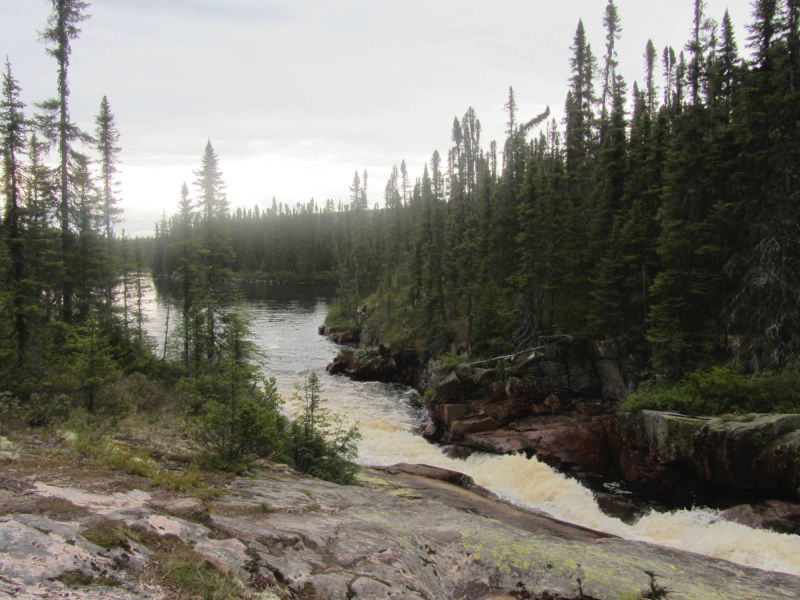

GALERIE
Nos plus belles sorties de marche
Marais du Nord, QC
Plage Jacques Cartier, Québec
Parc national des Grands Jardins, QC
Parc de la Gatineau, QC
 Parc national Frontenac, QC
Parc national Frontenac, QCParc national du Mont Mégantic, QC
Mont Bélair, Québec
Sandbanks provincial park, ON
Parc national du Mont Tremblant, QC
Parc national de la Gaspésie, QC
 Parc national du Saguenay, QC
Parc national du Saguenay, QCHautes Gorges de la rivière Malbaie, QC